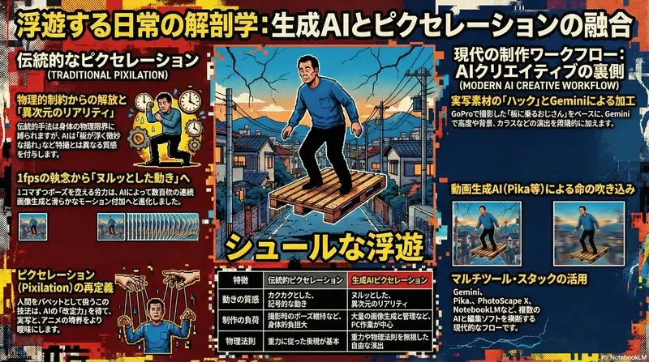
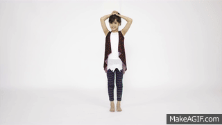
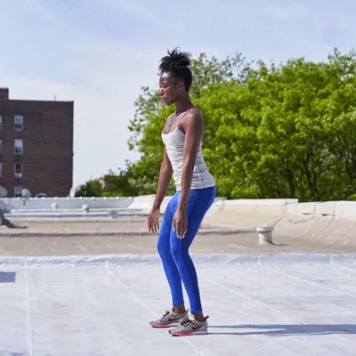
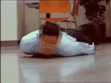

Vol.16 / Human Manipulation Study
人間をコマ撮る技術：
ピクセレーション比較と名作アーカイブ
2026.03.05 UP
人間をパペット（人形）として扱う「ピクセレーション」。前回の空中浮遊に加え、重力や物理的限界を無視した様々なバリエーションを解体します。これは、実写とアニメーションの境界線を曖昧にする、最もマニアックな表現手法の一つです。

◎ ピクセレーション手法：比較マトリックス
1. 空中浮遊 (Levitation)
効果：魔法のような浮遊感を演出し、重力を無視した動きを作り出す。

3. 瞬間着替え (Instant Change)
効果：歩きながら服が次々と変わっていく。

4. 空気椅子 (Air Chair)
効果：見えない椅子に座ったまま移動する。

5. 人間ヘビ (Human Snake)
効果：複数の人間が連結し、同期して動く。
◎ 名作アーカイブ：ピクセレーションの系譜
ピクセレーションを世界に知らしめた、歴史的重要作品を紹介します。
■ Music Video: Peter Gabriel - "Sledgehammer" (1986)
ピクセレーションの「教科書」と言える一作。ピーター・ガブリエル本人が数日間横たわり続け、1コマずつ顔の表情や周囲の物体を動かして撮影されました。クレイアニメと実写の融合という点で、アードマン・アニメーションズの技術の極致が見られます。
■ Short Film: Norman McLaren - "Neighbours" (1952)
ピクセレーションという言葉を広めたカナダの名作。役者が地面を滑る「スケーティング」を多用し、戦争の虚しさをシュールに描きました。アカデミー賞短編ドキュメンタリー賞を受賞した、歴史的資料としても価値の高い一本です。
■ Commercial: Target "Everyday Collection"
日用品が音楽に合わせて踊り、モデルが瞬間移動するような演出。CM業界では「テンポの良さ」と「商品への注目」を両立させるため、今でもピクセレーションの手法が頻繁に使われています。
■ MV: Oren Lavie - "Her Morning Elegance"
ベッドの上をキャンバスに見立て、寝たままの姿勢でピクセレーションを行う「水平ピクセレーション」の代表例。重力の向きを90度変えることで、まるで水中や宇宙を泳いでいるような質感を生んでいます。